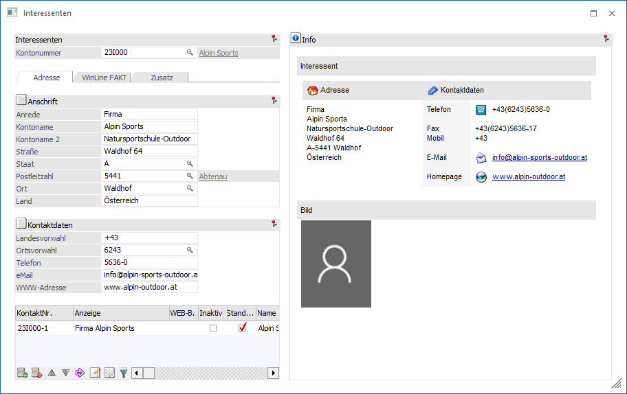
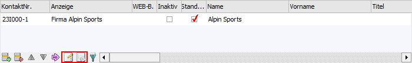
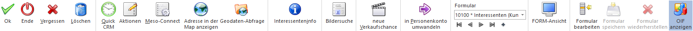
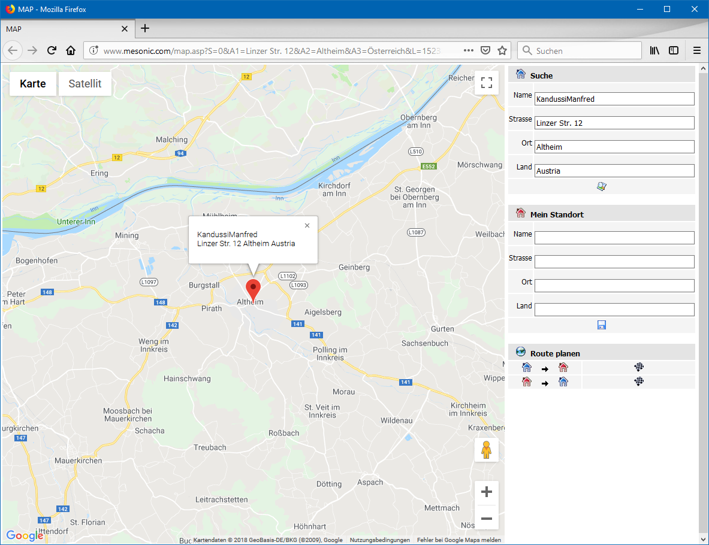

Dieses Fenster wird geöffnet, wenn in der Interessentenverwaltung ein alternatives Formular zur Bearbeitung von Stammdaten ausgewählt wurde.
Hinweis
Bei Nutzung der FORM-Ansicht wird der Interessentenstamm in einem "Lesemodus" geöffnet, d.h. es können bestehende Interessenten aufgerufen und kontrolliert werden, ein Ändern bzw. eine Neuanlage ist nicht möglich. Hierfür muss zunächst mit Hilfe des Buttons "Editieren" der "Bearbeitungsmodus" aktiviert werden.
Ø Formular
Über die Auswahlbox "Formular" kann gewählt werden, in welcher Form der Stammdatensatz bearbeitet werden soll. Wenn die Option "0 - Allgemein" gewählt wird, dann wird wieder in die "Normalansicht" mit allen Eingabefeldern zurückgeschalten.
Hinweis
Die Definition der Formulare für die individuelle Gestaltung erfolgt im Programm WinLine START über den Menüpunkt "Vorlagen - Vorlagen Anlage - Individuelle Formulare". Das Ergebnis davon könnte z.B. so aussehen:

Bei der Nutzung von individuellen Formulare sind die folgenden Besonderheiten zu beachten
Ø Tabelle "Ansprechpartner"
Bei der Tabelle der Ansprechpartner stehen die Tabellenbuttons "Aktionen" und "MesoConnect" zusätzlich zur Verfügung und beziehen sich immer auf den ausgewählten Ansprechpartner.

Buttons

Ø Ok
Durch Drücken des Buttons "Ok" bzw. der Taste F5-werden alle durchgeführten Änderungen bzw. Eingaben gespeichert.
Hinweis
Über die FIBU-Applikationsparameter der WinLine START (Parameter - Applikations-Parameter) kann eingestellt werden, ob neu angelegte bzw. geänderte Interessenten in Vor- oder Folgewirtschaftsjahre übernommen werden sollen. Diese Übernahme kann entweder automatisch oder manuell erfolgen. Wenn die Übernahme manuell erfolgen soll, so wird beim Speichern des Kontos das Fenster "Konto aktualisieren" geöffnet, wo die Wirtschaftsjahre ausgewählt werden können, auf welche die Änderungen bzw. das neue Konto "kopiert" werden sollen.
Ø Ende
Bei Anwahl des Buttons "Ende" bzw. der Taste ESC wird das Fenster geschlossen und alle nicht gespeicherten Eingaben verworfen.
Ø Vergessen
Durch Anwahl des Buttons "Vergessen" bzw. der Taste F4 wird die Anzeige des ausgewählten Personenkontos beendet und der Fokus auf das Feld "Kontonummer" gesetzt. Alle vorgenommenen Änderungen werden dabei verworfen.
Ø Löschen
Durch Anklicken des Buttons "Löschen" wird der Interessent, sofern keine Bewegungen gespeichert sind (es dürfen keine Belege vorhanden sein), gelöscht.
Ø Quick CRM
Wenn dieser Button angeklickt wird, kann ein CRM-Fall zu dem gerade geöffneten Interessenten erfasst werden. Voraussetzung dafür ist:
ü Es muss eine gültige CRM-Lizenz vorhanden sein.
ü Der Benutzer muss ein CRM-Benutzer sein.
ü Es müssen entsprechende CRM-Aktionen bzw. CRM-Workflows mit der Kennzeichnung "QUICK CRM" angelegt sein.
Hinweis
Es werden im WinLine Standard 9 CRM-Aktionen (CRM-Gruppe "100") mitgeliefert.
Ø Aktionen
Durch Anwahl dieses Buttons kann eine Aktion für das Personenkonto ausgeführt werden. Die Art der Aktion wird dabei durch ein Kontextmenü ausgewählt. Folgende Aktionen stehen zur Verfügung:
ü  eMail senden
eMail senden
Der Interessenten wird als
temporäre Kampagne an das Postausgangsbuch (Versandart "Einzel-Mail") zum
Erstellen und Versenden der E-Mail übergeben.
ü Brief schreiben
Es wird das
Postausgangsbuch geöffnet, in dem für den Interessenten ein Serienbrief
ausgegeben werden kann.
ü  Fax
Fax
Es wird das Postausgangsbuch
geöffnet, in dem für den Interessenten ein Serienfax ausgegeben werden kann.
ü Telefon 1 anrufen
Wird diese Aktion
gewählt und ist bei dem Interessenten auch eine Telefonnummer eingetragen, wird
- sofern die entsprechenden Voraussetzungen vorhanden sind - die Telefonnummer 1
gewählt.
ü Mobiltelefon anrufen
Wird diese Aktion
gewählt und ist bei dem Interessenten auch eine Telefonnummer eingetragen, wird
- sofern die entsprechenden Voraussetzungen vorhanden sind - die
Mobiltelefonnummer gewählt.
ü  WWW Adresse aufrufen
WWW Adresse aufrufen
Wenn bei dem
Interessenten eine Internet-Adresse hinterlegt ist, wird der installierte
Browser geöffnet und automatisch die im Datensatz hinterlegte Adresse
angesurft.
Ø Meso-Connect
Durch Anklicken des Buttons "Meso-Connect" wird ein Kontextmenü geöffnet, in dem standardmäßig folgende "Meso-Connect"-Aktionen zur Verfügung stehen:
ü Mail
An den Interessenten kann mit
dieser Aktion ein Mail geschickt werden. Es öffnet sich dazu das
Meso-Connect-Mail Fenster indem die Betreffzeile des Mails sowie ein Text
angegeben werden kann. Weiter besteht noch die Möglichkeit, ein Attachment
anzuhängen. Voraussetzung ist, dass bei dem Interessenten auch eine
E-Mail-Adresse vorhanden ist.
ü  Kontakt
Kontakt
Mit dieser Aktion kann ein
Abgleich mit den Microsoft-Outlook-Kontakten durchgeführt werden, wobei es 4
unterschiedliche Szenarien geben kann:
ü 1. Der Datensatz ist in Outlook noch nicht vorhanden. In diesem Fall wird der Kontakt neu angelegt.
ü 2. Der Datensatz ist in Outlook bereits vorhanden, in der WinLine wurde eine Änderung durchgeführt. In diesem Fall werden die veränderten Daten an Outlook übergeben.
ü 3. Der Datensatz ist in Outlook bereits vorhanden und wurde dort auch verändert. In diesem Fall werden die veränderten Daten in die WinLine übernommen.
ü 4. Der Datensatz ist in Outlook und in der WinLine bereits vorhanden und wurde auch in beiden bereits verändert. In diesem Fall erfolgt eine Frage, welche der Daten aktualisiert werden sollen.
ü Excel
Damit wird das Programm Microsoft
Excel gestartet und der Interessent wird mit den Spaltenüberschriften
übergeben.
ü Word
Hier wird eine Word-Vorlage
aufgerufen, in welche die Daten des Interessenten übergeben werden.
ü StarCalc
Sofern das Programm StarCalc
installiert ist, können die Daten in dieses Programm übergeben werden.
ü StarWrite
Sofern das Programm StarWrite
installiert ist, können die Daten in dieses Programm übergeben werden.
ü Wizard
Über diesen Eintrag kann der
Meso-Connect Wizard aufgerufen werden, mit dem neue Aktionen erstellt bzw.
bestehende Aktionen verändert werden können.
Ø Adresse in der Map anzeigen
Wenn dieser Button angeklickt wird, wird - sofern eine Internetverbindung vorhanden ist - eine Internetseite geöffnet, in welcher der Standort der gewählten Adresse angezeigt wird.

Hinweis
Wenn im Bereich "Mein Standort" die eigene Adresse eingegeben wird, dann kann auch die Route zum Ziel ermittelt und angezeigt werden. Die Speicherung des eigenen Standorts per Cookie ist ebenfalls möglich.
Ø Geodaten-Abfrage
Mit Hilfe von Geodaten kann der Interessent in der Geo Map des Power Reports dargestellt werden. Durch Anwahl des Buttons "Geodaten-Abfrage" werden hierfür die genauen Geodaten des Interessenten über das Internet ermittelt und abgespeichert. Die Ermittlung findet anhand der folgenden Parameter statt:
ü Straße
ü Postleitzahl
ü Ort
ü Land
Hinweis
Bei der Anlage eines Interessenten werden automatisch ungenaue Geodaten (durch eine in der WinLine vorhandene Koordinatentabelle) ermittelt und zugewiesen. Die Ermittlung findet anhand der folgenden Parameter statt:
ü Postleitzahl
ü Länderkennzeichen
Ø Interessenteninfo
Durch Anklicken des Buttons "Konteninfo" werden alle Informationen zu diesem Interessenten angezeigt. Wenn zusätzlich zum Anklicken die SHIFT-Taste gedrückt wird, so gelangt man in die Interessenteninformation. Dies ist auch über den Shortcut (SHIFT + ALT + I) möglich.
Ø Bildersuche
Mit Hilfe dieses Buttons kann ein Bild für den Interessenten gesucht, ausgeschnitten und zugeordnet werden. Hierbei wird zunächst über ein Menü die Quelle des Bilds definiert. Folgende Varianten stehen zur Verfügung:
ü Bildersuche
Es wird das
Programm "Bildersuche" geöffnet.
ü Bildersuche - WinLine
Es wird
das Programm "Bilder in Datenbanken" geöffnet, über welches eine Grafik
ausgewählt werden kann.
ü Bildersuche - Datenträger
Es
wird der Öffnen-Dialog von Windows geöffnet, über welchen eine Grafik ausgewählt
werden kann.
Ø neue Verkaufschance
Mit Hilfe dieses Buttons kann eine neue Verkaufschance angelegt werden. Die aktuelle Interessentennummer wird hierbei automatisch in die Verkaufschance übertragen.
Ø in Personenkonto umwandeln
Durch Anwahl dieses Buttons kann der aktuelle Interessent in ein bestehendes oder neues Personenkonto gewandelt werden. Die Hinterlegung aller notwendiger Daten erfolgt hierbei in dem Fenster Umwandlung zum Personenkonto.
Hinweis
Handelt es um die Umwandlung in ein neues Personenkonto, so wird vor der endgültigen Wandlung das Register FIBU der Interessentenverwaltung automatisch aufgerufen. Durch eine weitere Speicherung der Daten per Button "Ok" bzw. der Taste F5 wird dann endgültig umgewandelt.
Ø Formular
Über die Auswahlbox "Formular" kann gewählt werden, in welcher Form der Stammdatensatz bearbeitet werden soll. Wenn die Option "0 - Allgemein" gewählt wird, dann wird wieder in die "Normalansicht" mit allen Eingabefeldern zurückgeschalten.
Hinweis
Die Definition der Formulare für die individuelle Gestaltung erfolgt im Programm WinLine START über den Menüpunkt "Vorlagen - Vorlagen Anlage - Individuelle Formulare".
Ø VCR-Buttons
Über die so genannten VCR-Buttons kann durch Mausklick zwischen den Datensätzen geblättert werden.
ü  Damit kann
der erste Datensatz angesprochen werden.
Damit kann
der erste Datensatz angesprochen werden.
ü  Damit kann
der vorherige Datensatz angesprochen werden.
Damit kann
der vorherige Datensatz angesprochen werden.
ü Damit kann der nächste Datensatz angesprochen werden.
ü Damit kann der letzte Datensatz angesprochen werden.
ü Damit wird die nächste freie Nummer für die Neuanlage gesucht.
Ø FORM-Ansicht
Mit Hilfe dieses Buttons kann die sogenannte "FORM-Ansicht" aktiviert werden. Im Gegensatz zur klassischen Eingabe unterstützt diese folgende Funktionen:
ü Lese- und Bearbeitungsmodus
ü Responsive HTML-Design
ü Erweiterte Layout-Komponenten
Hinweis
Die FORM-Ansicht basiert immer auf der Definition des individuellen Formulars. Die Gestaltung des Layouts kann wiederum in der WinLine INFO über den Menüpunkt "FORM - Designer" erfolgen.
Ø Formular bearbeiten
Durch Anwahl des Buttons "Formular bearbeiten" wird das ausgewählte Formular (d.h. die Vorlage) in einen Bearbeitungsmodus versetzt (Felder können verschoben, entfernt oder neue einfügt werden). Durch eine erneute Anwahl des Buttons wird der Modus wieder verlassen.
Hinweis
Der Button kann nur angewählt werden, wenn das Objektrecht "bearbeiten" (oder höher) für das individuelle Formular vorhanden ist.
Ø Formular speichern
Mit Hilfe dieses Buttons können vorgenommene Formularänderungen gespeichert werden.
Ø Formular wiederherstellen
Wenn Formularänderungen getätigt wurden, dann kann durch Anwahl des Buttons "Formular wiederherstellen" das ursprüngliche Formular wiederhergestellt werden.
Ø OIF anzeigen
Mit Hilfe dieses Buttons kann der OIF-Bereich im rechten Bereich des Fensters aktiviert bzw. deaktiviert werden.
Hinweis
Eine Aktivierung ist nur möglich, wenn in der Vorlage die Option "OIF anzeigen" aktiviert wurde.